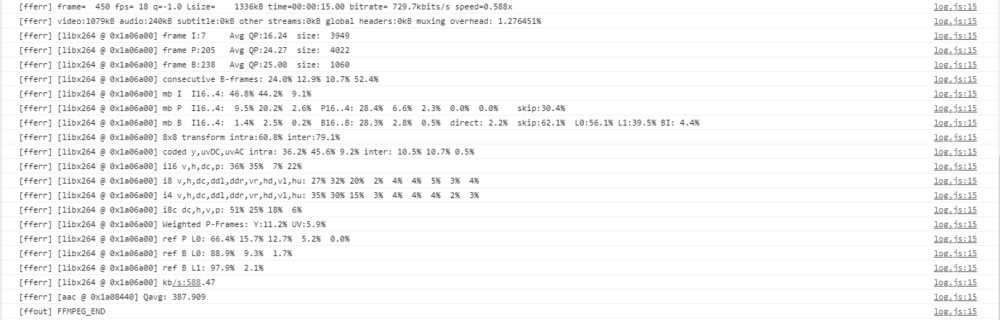
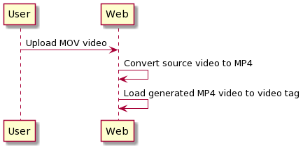

FFmpeg WASM
Introduction
FFmpeg WASM is a pure WebAssembly / JavaScript port of FFmpeg. It enables video & audio record, convert and stream right inside browsers. The main Git repository for it is https://github.com/ffmpegwasm/ffmpeg.wasm

Right now, in Recording process, we utilize user experience by uploading video source file directly from front-end web browser to S3 without going through any server using presigned S3 URL. The limitation of the approach is that we cannot convert the source video file as needed without going through the server (which increases a lot of waiting time for end users). Some handy cases for that needs are:
- Unify video source format to MP4 from different video file formats (AVI, MOV).
- Right now web browser does not support H265 video format and we need to convert to MP4 format to support playing it in web browser.
Based on the above needs, we research FFmpeg WASM library as we think that it would be nice if we can do the video conversion directly from web browser
Licensing
-
@ffmpeg/ffmpegcontains kind of a wrapper to handle the complexity of loading core and calling low-level APIs. It is a small code base and under MIT license. -
@ffmpeg/corefollowing the same licenses as FFmpeg and its external libraries.
How it works
- The only JavaScript file defined in HTML file is https://unpkg.com/@ffmpeg/ffmpeg@0.9.4/dist/ffmpeg.min.js but actually it is just a wrapper.
- Based on the actual need in our triggered ffmpeg function, the JavaScript will load ffmpeg/core file
*ffmpeg-core.wasmand its JavaScript file*ffmpeg-core.js. The size offfmpeg-core.wasmat the time of testing is 22MB. - Sometimes we may need to use the newest version of
@ffmpeg/coreand we can define it using customized path.
const ffmpeg = createFFmpeg({
corePath: '../../../src/ffmpeg-core.js',
});
- We can re-compile ffmpeg-core by checking build.sh inside https://github.com/ffmpegwasm/ffmpeg.wasm-core repository.
Testing example
- In the demo below, user will have an upload button to upload source video file, which can be in either webm, MOV or H.265 MP4 format.
- It takes several minutes to transcode and you can monitor the progress on the console of DevTool.
- The source of the sample demo is below.
<body>
<video id="player" controls></video>
<input type="file" id="uploader">
<script src="https://unpkg.com/@ffmpeg/ffmpeg@0.9.4/dist/ffmpeg.min.js"></script>
<script>
const { createFFmpeg, fetchFile } = FFmpeg;
const ffmpeg = createFFmpeg({ log: true });
const transcode = async ({ target: { files } }) => {
const { name } = files[0];
await ffmpeg.load();
ffmpeg.FS('writeFile', name, await fetchFile(files[0]));
await ffmpeg.run('-i', name, 'output.mp4');
//await ffmpeg.run('-i', name, '-q:v', 0, 'output.mp4');
const data = ffmpeg.FS('readFile', 'output.mp4');
const video = document.getElementById('player');
video.src = URL.createObjectURL(new Blob([data.buffer], { type: 'video/mp4' }));
}
document.getElementById('uploader').addEventListener('change', transcode);
</script>
</body>
- When user click upload button and select a MOV video file, FFmpeg WASM library will be called to converted it to MP4 file (output.mp4).

- User can trace the conversion status, as normal ffmpeg oss by its output in console log



- When the conversion is completed, JS loads HTML video tag's source with the converted video's data and display on screen.

- User flow diagram can be described as below

Testing result
- We made 4 test cases converting from different source video format to MP4 format:
- WebM: It is successful and the conversion time is fast. For around 8MB video it took less than 2 minutes.
- H.265: It is successful but the progress takes very long to complete, more than 6 minutes while if we do it with ffmpeg command it is just around 3 minutes. So nearly double the time.
- General MOV file from Internet: It is successful and the conversion time is quite fast, around 2 minutes.
- MOV file which recorded from MacOS: It is failed after few seconds using FFmpeg WASM library but it is successful using ffmpeg command.
- General MOV file from Internet: It is successful and the conversion time is quite fast, around 2 minutes.
At the moment of writing this article, FFmpeg WASM is twice slower and unstable, but it is worth monitoring the future progress, and we may use WASM of ImageMagic in the future.